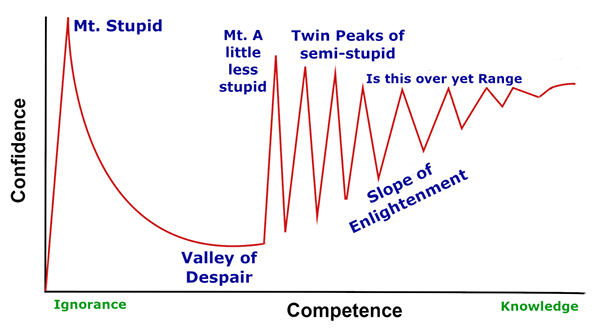

Skills
I personally appreciate this specific version of the Dunning-Kruger effect
chart. It provides great context when assessing the stage one is at when it
comes to his ability. With that in mind, I have added split my skills into
several categories.

Core Skills
These are my daily bread and butter with which I've been through all stages
of the Dunning-Kruger Effect.
Growing Skills
These are the things i'm making a major effort towards learnning and which
I'm constantly looking for opportunities to use in production.
Paused Skills
These are skills that I have at some point used in production or
experimented with but for various reasons no longer actively use or learn.